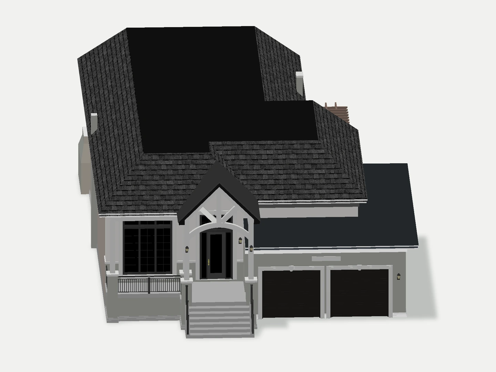

Turning Aldo Drive towards its driveway
I corrected the house’s orientation and checked new planning evidence around the city.

The front of the house
The previous view did not face the driveway correctly. I turned the study into position and refreshed the comparisons. That day I also updated the zoning and demolition evidence for 50 High Street East.
2155 Leanne Boulevard
Added the revised ten-storey apartment and eight townhouse blocks: 383 homes in all. The model follows the current plan, with smaller roof details and ground levels clearly qualified.
50–60 Harborn Road
Added the twelve proposed townhomes in two mansard-roof rows. These are a received proposal, with approval and construction still unconfirmed.
1970–1980 Fowler Drive
July plans add a 24-storey tower beside the two existing buildings. The model distinguishes the roof levels and simplifies the balconies and finishes.
The official-plan amendment took effect on 29 October 2026. The City’s 10 November register lists the zoning amendment as in force. Construction permission and timing remain unverified.
6344 Ninth Line
The three six-storey buildings moved about 409 m to the correct parcel, beside homes shown in City data. The model uses the posted roof levels. Proposed grades are approximate, and published plans give different counts of 141 and 153 homes.
1225 Dundas Street East
Replaced the old 18-storey version with the current stepped 16-storey design, open courtyard and townhomes. The source roof height is 51.94 m; the new zoning maximum is 52 m.
42–46 Park / Park and Elizabeth
The building body measures 95 m in the reference plans. The newer rooftop allowance brings the maximum to 106.5 m. The model approximates the roof shape and placement. Demolition was reported at the site.
Byngmount Shores
Corrected Byngmount Shores to the primary-confirmed seven-storey form and 150 affordable rentals. Its 27.5 m reference height still needs a current dimensioned elevation. October photographs show unfinished construction.
60 Dundas Street East
Added the missing site as a zoning-envelope study. Its permitted 16-, 32- and 31-storey zones are shown in violet; current architectural floor plates are still being checked.
49 South Service Road
Added the controlling 29-storey, 95 m Tribunal permission as a permitted-height study. Its outline and ground placement are approximate, and the site-plan process is still active.
Village Green
Added the three-building rental project. Current permits confirm 431 homes and eight, eight and nine storeys. The reference form is violet because metre heights and detailed current elevations remain unverified.
44–45 Longview Place
Added the three proposed house footprints and pitched-roof references. The current plans and older elevations disagree slightly on heights and split-level storey counts, so the violet model keeps those limits visible.
Above Condos / 30 Bristol Road East
Added a named Above Condos record and linked public references. The two towers and shared podium were already in the City geometry, so no duplicate building was added.
New planning decisions
The October 8 notices record September 29 passage for 2155 Leanne Boulevard, 1970–1980 Fowler Drive, 1225 Dundas East, 6344 Ninth Line, 3115 Hurontario, 44–45 Longview Place. The notices listed October 28 as the appeal deadline. Later decisions are recorded in the individual project records. Some sites also retain holding conditions. Council passage does not establish construction permission or the start of work.
Birch’s site-plan approval is now recorded separately from its unverified construction status. A City-owned Kariya parkland parcel has also been designated as public open space; that change does not alter the proposed Exchange condo towers.